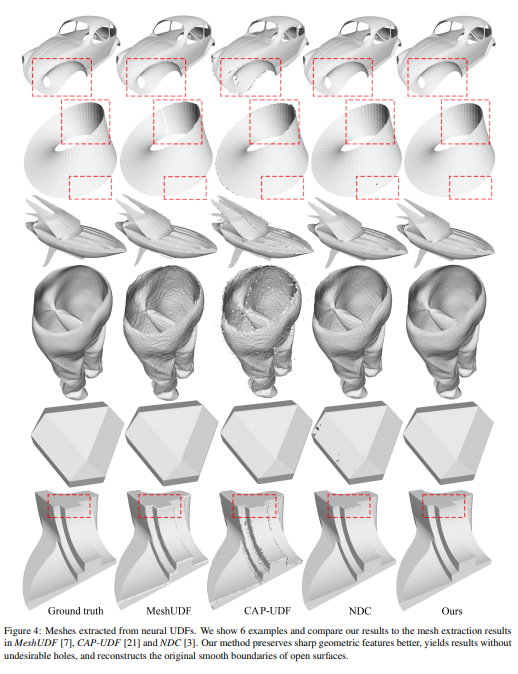
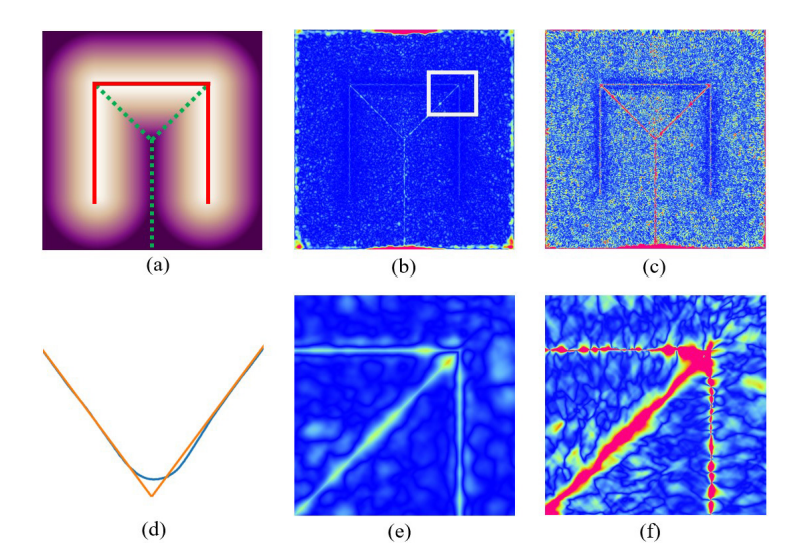

Imagine asking an AI to design a car body, a flowing piece of fabric, or even a Möbius strip. The system does not necessarily store that object as a list of triangles like ordinary 3D software would. Instead, it may encode the object as a mathematical field: for any point in space, the AI can estimate how far that point is from the object’s surface.
That sounds elegant, futuristic, and surprisingly compact. But it also creates a very practical problem: how do you turn that invisible mathematical description into an actual 3D surface that artists, engineers, and software tools can use?
This paper tackles a deceptively hard problem: extracting a clean, accurate surface from a neural representation that does not clearly mark where the surface begins or ends.
In Surface Extraction from Neural Unsigned Distance Fields, the researchers introduce a method called DualMesh-UDF, designed to recover high-quality 3D meshes from a particularly flexible kind of representation called a neural unsigned distance field. Their method is built to preserve sharp edges, recover open boundaries more faithfully, and avoid the holes and jagged artifacts that earlier approaches often produced.

images/figure4-results.png. This works especially well near the top because it immediately shows readers what “better surface extraction” looks like.
The promise of neural shape representations
In standard 3D graphics, a model is often made of vertices, edges, and triangles. In neural geometry, the representation can be much more fluid. Rather than explicitly storing a mesh, a neural network learns a function. Ask about any point in space, and it returns a number related to the object.
In this case, that number is an unsigned distance: how far the point is from the surface, regardless of which side of the surface the point lies on. That makes unsigned distance fields unusually flexible. They can represent open surfaces, thin structures, and even shapes that do not behave nicely under traditional inside-outside definitions.
Why this is harder than it sounds
The trouble is that old surface extraction algorithms depend on a very useful clue: a sign change. If one side of a region is positive and the other is negative, then the surface likely crosses somewhere in between. Unsigned distance fields remove that clue. Everything is non-negative. There is no neat “inside” versus “outside” switch to follow.
The paper points out a second complication: once the distance field is approximated by a neural network, the representation becomes noisy exactly where precision matters most. Near the true surface, and especially near sharp features, the network’s approximation errors become more significant. The paper shows that neural UDFs tend to be less reliable near the zero-level set and near sharp regions, making direct extraction unstable and error-prone.
In other words, the surface is hardest to recover precisely where the math is least trustworthy.

images/figure1-error-map.png. This helps general readers see why the model struggles most near the surface and sharp edges.
The clever idea: reconstruct the surface indirectly
Instead of trying to locate the surface by brute force, the researchers take a more geometric approach. Their insight is simple but powerful: if the representation is noisy right at the surface, stop depending on those unreliable points.
This is one of the most appealing aspects of the paper. The method does not demand a perfect neural field. Instead, it extracts structure from imperfect information by asking a more robust question: where do several approximate geometric clues agree that the surface should be?
Why tangent planes are such a smart move
A tangent plane is a local approximation of a surface. If you zoom in far enough on a smooth patch, it starts to look flat. By estimating these little local planes and then combining them, the method builds a stronger picture of the true geometry than any single noisy sample could provide.
Efficiency matters too
Recovering a surface from a neural field could easily become computationally expensive, especially in high resolution. To manage that, the method uses an adaptive octree, a data structure that subdivides space more finely where detail is needed and keeps things coarser elsewhere.
That means the algorithm spends effort where the shape actually exists, rather than wasting computation on large empty regions. It is a classic geometry-processing trick, but here it becomes part of a broader strategy for making neural surface extraction both accurate and practical.
What the experiments show
The paper compares DualMesh-UDF with several recent competing methods, including MeshUDF, CAP-UDF, and Neural Dual Contouring. Across datasets containing garments, CAD models, and other shapes, the authors report that DualMesh-UDF achieves better reconstruction quality on standard metrics such as Chamfer distance, F-score, and Hausdorff distance.
The qualitative examples are arguably even more compelling. The paper shows that the new method better preserves sharp geometric features, more faithfully reconstructs open boundaries, and avoids undesirable holes and zig-zag artifacts that can appear in competing approaches. It also performs well not only on single-shape overfitted neural fields, but also on a pre-trained shared UDF network with latent codes, suggesting that the method is reasonably robust beyond one narrowly controlled setting.
Why this matters outside the lab
This kind of work sits at the intersection of AI, graphics, and digital fabrication. Better surface extraction could matter in many places:
As AI systems become better at generating 3D content, representation is only half the battle. The other half is conversion. If the AI can imagine a shape but cannot produce a clean, usable mesh, the result remains difficult to deploy in real tools and workflows. In that sense, this paper is about infrastructure: the often overlooked engineering needed to turn elegant neural ideas into something useful.
The bigger story
There is a broader lesson here. Many AI systems produce outputs that are rich but messy, expressive but not directly usable. Progress often comes not just from building better models, but from designing smarter ways to interpret and refine what those models produce.
DualMesh-UDF succeeds because it does not assume the neural representation is perfect. It works around the model’s weaknesses by leaning on geometry, optimization, and careful filtering.
That combination of machine learning and classical geometric reasoning feels especially promising. Rather than replacing established ideas from graphics, the paper shows how they can be reimagined for the neural era.
Final takeaway
Surface Extraction from Neural Unsigned Distance Fields is not the kind of paper that makes splashy claims about replacing all of 3D graphics overnight. Its contribution is more grounded and, for that very reason, more exciting: it solves a real bottleneck.
By making it easier to recover clean meshes from flexible neural shape representations, DualMesh-UDF helps bridge the gap between mathematical neural fields and practical 3D objects. That is the kind of advance that can quietly unlock many others.
Paper citation
If you want this page to feel more like a polished research blog, adding the paper citation directly on the page helps readers quickly identify the source and find the original work.